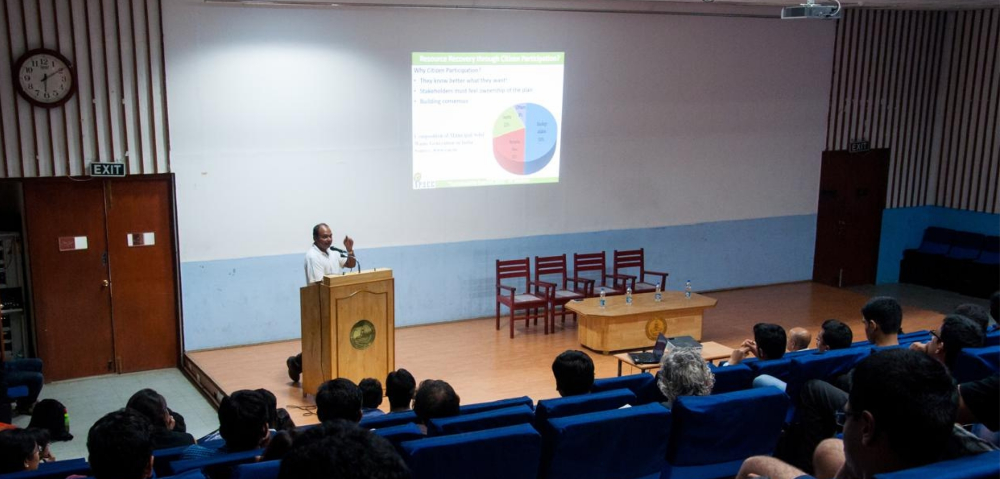
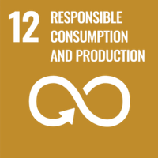

APSCC collaborated with IIT Madras S-NET to host the Sustainability Summit 2015 — a panel discussion on sustainable urban design for Chennai and a case study challenge on solid waste management, bringing together experts and student innovators.
In the second week of March 2015, the Indian Institute of Technology Madras campus became a hub for sustainability thinking as its student-run Sustainability Network (S‑NET) teamed up with the Association for Promoting Sustainability in Campuses and Communities (APSCC) to present the Sustainability Summit 2015. Building on the momentum of the previous year's collaboration, the 2015 edition sharpened its focus onto a single, urgent subject: the future of Chennai as a livable, sustainable city.
The Summit was designed around two complementary events — one to gather expert perspective, and one to convert that perspective into student-generated solutions.
Sustainable Designs for Chennai City
An expert panel discussion held at the Central Lecture Theatre (CLT), IIT Madras, examining how urban design can make Chennai greener, cleaner and more resilient.
Sustainable Solid Waste Management in Chennai
A case study challenge inviting student teams of two to four to draft practical proposals addressing Chennai's mounting solid waste management crisis.
The Panel: Four Perspectives on a Greener City
The panel discussion brought together four voices from academia, civil society and the environmental industry, each delivering a focused twenty-minute talk followed by an open question-and-answer session. The format was deliberate — long enough to develop an argument, short enough to keep momentum, and always anchored to Chennai's real-world sustainability challenges.
Together, the panelists mapped sustainability across the systems that define a modern city — buildings, transport, water and the recovery of resources — while emphasising that no single fix works in isolation. Their talks underscored a recurring theme: sustainable cities are built through the integration of good engineering, smart policy and active citizen participation.

The Challenge: Solving Chennai's Waste Crisis
Running alongside the panel was a hands-on case study challenge on Sustainable Solid Waste Management in Chennai. Teams of two to four students were tasked with developing practical, implementable proposals to tackle the city's escalating waste management crisis — moving beyond critique to concrete, workable solutions.
By framing the challenge around a live civic problem, the Summit pushed participants to weigh technical feasibility against cost, policy and public behaviour — the same trade-offs that confront city administrators every day. The exercise turned the classroom into a planning room, and students into problem-solvers.
Aligning with the Global Goals
The Sustainability Summit 2015 spoke directly to several of the United Nations Sustainable Development Goals, connecting a local campus initiative to a global agenda for sustainable development.




Sustainable cities are not designed by engineers alone — they are built where good engineering, smart policy and active citizens meet.
Through its partnership with IIT Madras S‑NET, APSCC continued its mission of embedding sustainability into campus life and channelling student energy toward the real challenges facing India's cities. The Sustainability Summit 2015 stands as a model for how universities and civil-society organisations can work together to turn ideas into action.